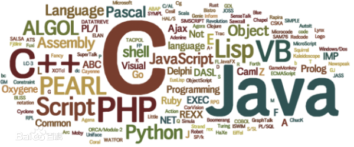

编程语言
编程语言（programming language）可以简单的理解为一种计算机和人都能识别的语言。 一种计算机语言让程序员能够准确地定义计算机所需要使用的数据，并精确地定义在不同情况下所应当采取的行动。
编程语言处在不断的发展和变化中，从最初的机器语言发展到如今的2500种以上的高级语言，每种语言都有其特定的用途和不同的发展轨迹。 编程语言并不像人类自然语言发展变化一样的缓慢而又持久，其发展是相当快速的，这主要是计算机硬件、互联网和IT业的发展促进了编程语言的发展。
一、内容简介
计算机编程语言能够实现人与机器之间的交流和沟通，它是一种特殊的语言。 因为它是用于人与计算机之间传递信息的，所以人和计算机都能“读懂”。具体地说，一方面，人们要使用计算机语言指挥计算机完成某种特作， 就必须对这种工作进行特殊描述，所以它能够被人们读懂。 另一方面，计算机必须按计算机语言描述来行动，从而完成其描述的特定工作，所以能够被计算机“读懂”。
二、发展历程
正如从甲骨文到现代汉字的演变过程是伴随着巨大的变化一样，计算机语言在诞生的短短几十年里， 也经过了一个从低级到高的演变过程。具体地说，它经历了机器语言、汇编语言、高级语言3个阶段。
1、汇编语言
该语言主要是以缩写英文作为标符进行编写的， 运用汇编语言进行编写的一般都是较为简练的小程序，其在执行方面较为便利，但汇编语言在程序方面较为冗长，所以具有较高的出错率。
2、机器语言
这种语言主要是利用二进制编码进行指令的发送，能够被计算机快速地识别，其灵活性相对较高， 且执行速度较为可观，机器语言与汇编语言之间的相似性较高，但由于具有局限性，所以在使用上存在一定的约束性。
3、高级语言
所谓的高级语言，其实是由多种编程语言结合之后的总称，其可以对多条指令进行整合， 将其变为单条指令完成输送，其在操作细节指令以及中间过程等方面都得到了适当的简化， 所以，整个程序更为简便，具有较强的操作性，而这种编码方式的简化，使得计算机编程对于相关工作人员的专业水平要求不断放宽。
三、常用语言
1、C语言
在当前常用的编程语言中，C语言是使用时间最长的一种语言类型，也是使用较为广泛的一种通用语言。 在编程研究中我们发现，C语言之所以在软件开发行业中具有强大生命力，主要是因其具有以下的三个特点：
（1）良好的使用性能。在软件编程中，C语言具有良好的使用功能，如语言简短、通用性强等，因此适用于这类计算机系统使用。
（2）计算机编程的基础语言。作为一种使用时间最长的编程语言，C语言在编程中较之其他高级语言与计算机系统更加接近，因此其也成为了软件编程的基础。 在其他语言编程遇到困难的情况下，利用C语言编程可以解决问题，实现良好的编程过程。
（3）具有一定的专业性优势。当前C语言在部分专用计算机领域，如工业单片机控制程序的编制中， 具有一定的专业优势。这种技术优势的存在，对于C语言发展起到了重要的促进作用
2、C++语言
C++语言是在视窗软件系统发展的情况下，基于C语言出现的一种视窗软件编程语言，其优势在于以下几点：
（1）继承C语言技术优势，由于C++语言是在C语言基础上出现的编程语言， 因此其继承了C语言编程中的优势，同时可以与C语言编程的其他软件进行衔接。
（2）适用于窗口软件编程。在编程过程中，c++语言避免了C语言编程窗口软件系统工作量大的缺陷， 提高了软件编程效率与质量，进而为窗口软件编制发展提供了支持。
3、Java语言
随着网络系统的不断发展，C、C++等语言编程都遇到了一定问题。在这一情况下，Java语言因其对网络环境的适应性，进而成为了网络软件编程的主要语言，其优势包括了以下几点：
（1）性能更加优秀。这一语言在较之C++语言更加简单，同时具有完全面向服务对象特征，进而其内容中的多态性、继承性以及封装性特征更加明显。
（2）更适合网络环境。java语言在使用中属于分布式语言，因此其更加符合具有分布性特征的网络软件开发应用。同时为了应对网络安全性问题，Java语言的安全性也高于其他语言，更加适合网络开发应用。
（3）与控制系统的配合。在软件开发中，Java语言与当前常用的控制系统(如Windows、Linux)进行配合，提高了软件开发应用质量。
4、Python语言
Python语言是一种面向对象的、解释型的、动态数据类型的高级程序设计语言，具有简洁的语法规则， 使得学习程序设计更容易，同时具有强大的功能，能满足大多数应用领域的开发需求。具体来说， Python语言具有如下特点：
（1）简单：Python是一种代表简单主义思想的语言。阅读一个良好的 Python程序就感觉像是在读英语一样。 Python的这种简单，使用户能够专注于解决问题而不是去搞明白语言本身。
（2）免费、开源： Python是 FLOSS(自由/放源码软件)之一。简单地说，用户可以自由地发布这个软件的副本，阅读它的源代码以及修改以及把它的一部分用于新的自由软件中。
（3）高层语言： 用户在使用 Python语言编写程序的时候，无须考虑如何管理程序所使用内存一类的底层细节。
（4）可移植性： 由于它的开源本质， Python已经被移植在许多平台上（经过改动使它能够工作在不同平台上）。
（5）解释性： 个用编译性语言(如C或C++)编写的程序可以从源文件(即C或C++语言)转换到计算机使用的语言——二进制代码，即0和1。这个过程通过编译器和不同的标记、选项完成。运行程序的时候，连接/转载器软件把程序从硬盘复制到内存中并执行。对于解释型语言 Python，相应的程序不需要编译成二进制代码，计算机可以直接从源代码运行程序。在计算机内部， Python解释器把源代码转换成字节码的中间形式，然后再把字节码翻译成计算机使用的机器语言并运行。事实上，执行 Python程序，用户不需要担心如何编译程序，如何确保连接转载正确的库等。
（6）面向对象： Python语言既支持面向过程的编程，也支持面向对象的编程。在面向过程的语言中，程序是由过程或可重用代码的函数构建起来的。在面向对象的语言中，程序是由数据和功能组合而成的对象构建起来的。与其他主要的语言(如C++和Java)相比，Python以一种非常强大又简单的方式实现面向对象编程。
（7）可扩展性： 如果用户需要让一段关键代码运行得更快或者希望某些算法不公开，那么可以把部分程序用C或C+编写，然后在 Python程序中使用它们。
4、数据库开发语言
在当前计算机系统应用中，数据库系统占据着较为重要位置。而在当前的数据库开发中，其常用的编程语言包括了SQL、Visual Basic与Access等语言类型。其中SQL语言是当前最主流的数据库语言，而VisualBasic语言是在内置SQL语言的基础上，设计的一种数据库开发编程语言，具有操作简单、符合数据库开发特点等优势。而在数据库开发中，Access语言是专业针对小型数据库而使用的编程语言。在使用中其开发功能较强，使用中与SQL语言类似，并与Visual Basic有着较为紧密的关系，因此其使用具有较大空间。
5、其他编程语言
在实际的开发编程中，除了以上的几种语言外，Ruby、MATLAB、R、CUDA、Erlang等语言也在编程中得到了一定应用。虽然这些语言应用范围较小，但是都有着一定的技术特征，因而在部分特殊软件编程，以及组合应用中得到了应用。
四、发展方向
1、为使用者的操作提供便捷，基于当前计算机程序的设计过程中，其核心主线仍是由面向对象程序设计以及数据抽象两者所占据，而为了有效提升计算机编程语言的操作便捷性，必须保证编程语言的简单易学，不具备较高的专业性，编程语言要向为更多使用者提供便捷性的方向发展。要求只要具备一定的基础概念、基本使用方式的能力，使用者就可对较为简单的工作流程进行编写工作，有效提升操作的便捷性。
2、编程语言还会逐渐向面向对象的方向发展，提供简单的类机制以及动态的接口模型。对象中封装状态变量以及相应的方法，实现了模块化和信息隐藏。提供了一类对象的原型，并且通过继承机制，子类可以使用父类所提供的方法，实现了代码的复用;因为计算机网络具有开放性的特点，所以编程语言应该充分考虑安全性，为程序的编写提供一个安全的环境。所以应该创建安全保护机制，根据程序编写的特点，制定适应的安全体系，构建安全和谐的编写环境;平台无关性就是为了使编写的程序能够在不同机器、不同平台上进行移植，不受到平台的限制，所以编写语言应该向平台无关性方向发展，这样编写的程序在应用上就能够更加方便，应用范围更加广泛。